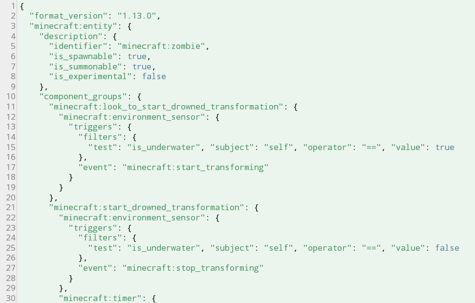
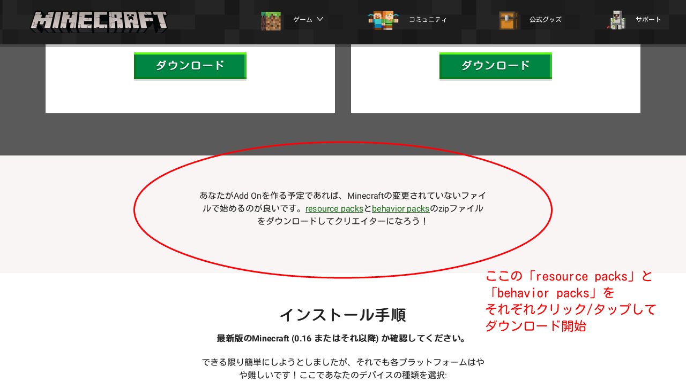

アドオン作成 - アドオンを作るひとへ
目次は右上の「≡」から！
アドオンって何？
簡単に言えば、「公式が認めている改造」です。
公式が認めているとはどういうことかと言うと、Minecraftの公式サイトで公式がアドオンというものについて紹介し、プレイヤーにアドオン作成を推しているからです。さらには、このページではアドオンのテンプレートも配布しています。ちなみにこのページは「マインクラフト アドオン」と検索すれば一番上に出てくるものとなります。
先に言っておくと、Windows10版やスマホ版(AndroidとiOS)ならアドオンを導入することができますが、NintendoSwitch版やPlayStation版には現状アドオンを導入することができません。NintendoSwitch版やPlayStation版で遊ぶには、アドオンが導入可能なプラットフォーム(Windows10版やスマホ版)でアドオンを導入したワールドを開き、マルチプレイなどでそのワールドに参加するという方法でないといけません。
MODと違うの？
「Mod」とはまったく異なるものです。こちらは非公式で、ちゃんとしたプログラミングをして改造するものなのでさまざまなことを無理矢理動作させます。
普通のストアにないような裏アプリ的なものを使ったりするので非推奨で、このサイトでは作り方など説明しません。
アドオンで何ができるの？
まず、リソースパックでは、主に「見た目」にかかわる変更をします。
・ブロック、アイテム、モブの見た目を変える
・モブの形(モデル)を変える
・効果音を変える
・オリジナルのパーティクルを追加する
・シェーダを追加する(スマホ版のみ)
・モブの形(モデル)を変える
・効果音を変える
・オリジナルのパーティクルを追加する
・シェーダを追加する(スマホ版のみ)
次に、ビヘイビアパックでは、システムや仕様にかかわる変更・追加をします。
・モブやプレイヤーの性質を変える
・モブを倒したときに落とすアイテムを変える
・村人との取引内容を変更する
・自然に生成されるチェストの中身を変更する
・モブ、アイテム、ブロック、バイオーム、レシピの追加
・モブを倒したときに落とすアイテムを変える
・村人との取引内容を変更する
・自然に生成されるチェストの中身を変更する
・モブ、アイテム、ブロック、バイオーム、レシピの追加
もっと具体的に書こうとするとここに収まらなくなってしまいます...... 実際にアドオンを作れるようになれば、どんなものが作れるのか具体的にわかってくると思います！
簡単に作れる？
簡単、とまではいきません...... しかし、覚悟をしっかりしてちゃんと学べば上達も長くはないと思います！(自分には無理だと投げ捨てるとうまくいきません！)
(必ずではないですが、こういうのを扱います↓)

アドオンの大部分は上の画像のような
メンタルが大事とも言えますが、何よりテキトーに勉強するとミスの沼から抜けだせなくなってイヤになってしまうのでご注意を。
アドオンづくりの心構え
テキトーにやってめちゃくちゃ小さいミスに気づけなくて「もうわかんない......」となって挫折しがちなので、
・新しい知識の説明は隅々まで理解する
・うまくいかなくても丁寧に原因を探る
・うまくいかなくても丁寧に原因を探る
これを大事にしてください。誰かに質問したときにグダって迷惑になったり、自分の思い通りにいかなくてストレスがたまったりします。
アドオン作りに必要なもの
ぜんぶ無料で手に入ると思います。
● ファイルエクスプローラ
画像や動画、テキストファイルなど、スマホやパソコンのデータを整理するやつです。パソコンなら標準搭載のファイルエクスプローラで十分だと思います。
しかし、スマホは標準搭載のものだとうまくファイルを扱えなかったりするので、アプリをダウンロードすることをおすすめします。
Androidでのオススメ：「ファイルマネージャー」
● テキストエディタ
パソコンで言うところのメモ帳のようなものです。ただ、メモ帳でもできるとはいえいろいろ不便なので、プログラミング向けのようなテキストエディタを入手することをおすすめします。
以下の機能を目安に探してみてください。「あるとうれしい機能」となるとスマホのアプリではなかなかなかったり、重かったりします。
最低限あったほうがいい機能
・行番号
・文字列の検索機能
・画面の右端で勝手にテキストを折り返し(ワードラップ)しない
あるとうれしい機能
・「{ }」のはじまりと終わりを点線などで繋いでくれる
・ハイライト(構文にあわせて色分けする機能)設定で「JSON」がある
・「{ }」の組で中身を折り畳んで表示できる
・構文ミスを指摘してくれる
・行番号
・文字列の検索機能
・画面の右端で勝手にテキストを折り返し(ワードラップ)しない
あるとうれしい機能
・「{ }」のはじまりと終わりを点線などで繋いでくれる
・ハイライト(構文にあわせて色分けする機能)設定で「JSON」がある
・「{ }」の組で中身を折り畳んで表示できる
・構文ミスを指摘してくれる
Androidでのオススメ：「QuickEdit」または「コードエディター」
PCでのオススメ：「Visual Studio Code」
● テンプレート
公式が配布しているアドオンのテンプレートです。何も変更や追加を加えていない、いわゆるバニラのデータがだいたいすべて入っています。
ここで手に入ります→公式サイト

マインクラフト本体にアップデートが入ると、適宜このテンプレートも新しいバージョン向けに更新されるので、アップデートのたびに新しいものを手に入れることをおすすめします。その際古いものも使えないことはないので何でもかんでも消さないで残しておくのがいいです。
このテンプレートを手に入れたら解凍しておきましょう。適当な場所でそのまま解凍するよりは、アドオン専用のフォルダを新しく用意してそこで解凍するのがいいでしょう。その他整理の面は各自で行ってください。
今後、なんの前置きもなしに「テンプレート」といったらこれのことを指します。覚えてください。
そして、ビヘイビア(behavior)のほうには「documentation」フォルダの中に.htmlファイルが入っていると思いますが、アドオンの説明書みたいなものです。これらを「リファレンス」と呼ぶのでそちらも覚えておいてください。
● ペイントツール
テクスチャを描くならば必要です。ドット絵が描ければなんでもいいと思います。
● やる気と根性
アドオン作りはなかなか思い通りにいかないです。そして、ミスをしたときにどこでミスをしたのかわかりづらいので、それを探す根性がいります。
前提知識
マインクラフトの「統合版(BE)」と「Java版(JE)」の違いがわからない場合は向いてないと思います。
「ファイル」「フォルダ」「ファイルパス」「解凍」「圧縮」「拡張子」は何だかわかるようにしておきましょう。
あとは以下のマイクラ用語を知らないと多くの解説が通じないと思います。
● テクスチャ
ブロックやモブ、アイテムなどの見た目のことです。
● エンティティ
エンティティのほとんどはモブです。例えば、ゾンビやスケルトン、村人やプレイヤーなどのモブである生き物はすべてエンティティです。しかし、コマンドをやっているひとならば詳しいと思いますが、生き物以外にもエンティティと分類されるものがあります。例えば、矢、防具立て、トロッコ、ガストの火の玉、落下中のブロック、エンドクリスタル……などなど、/killコマンドが通用するものはすべてエンティティとなります。